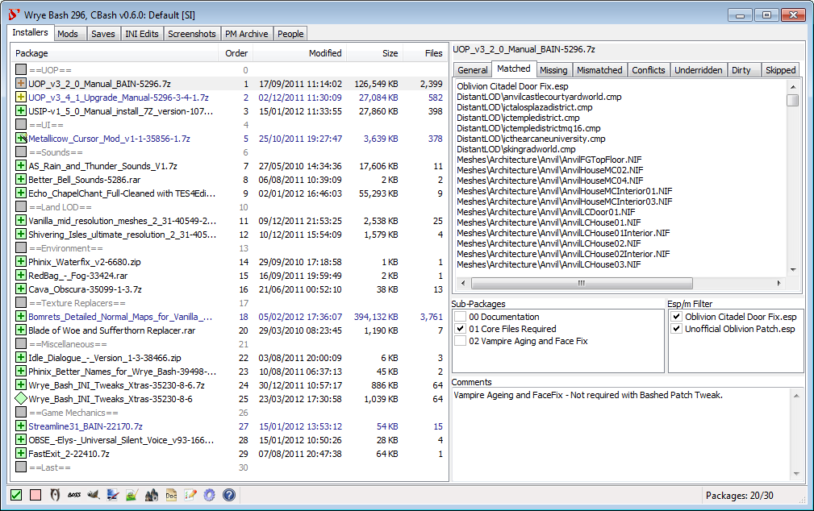
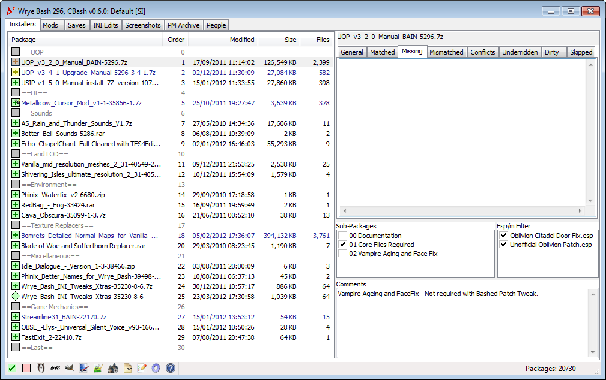
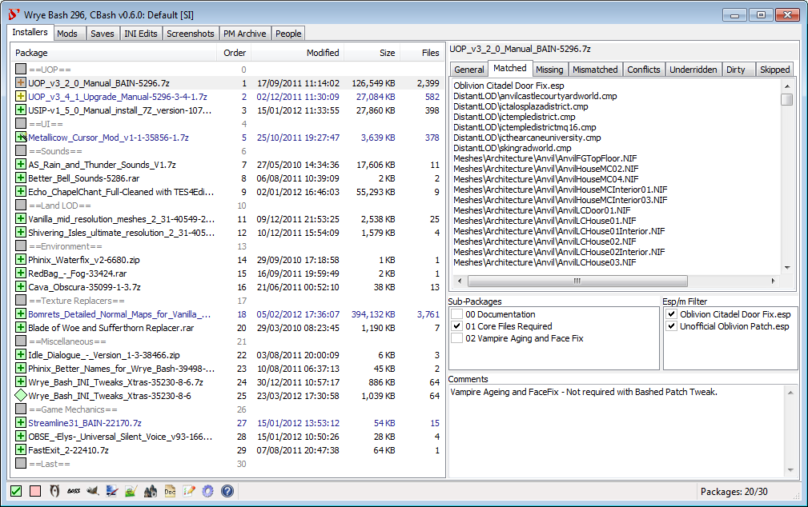
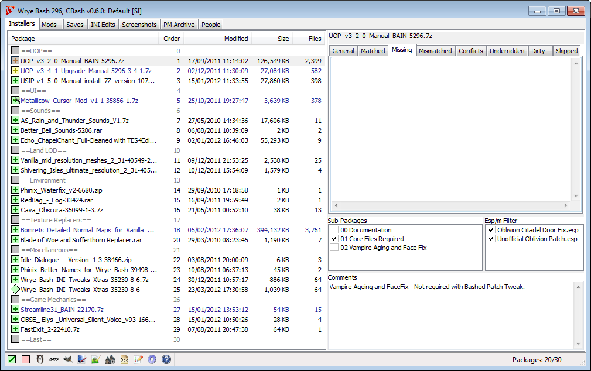
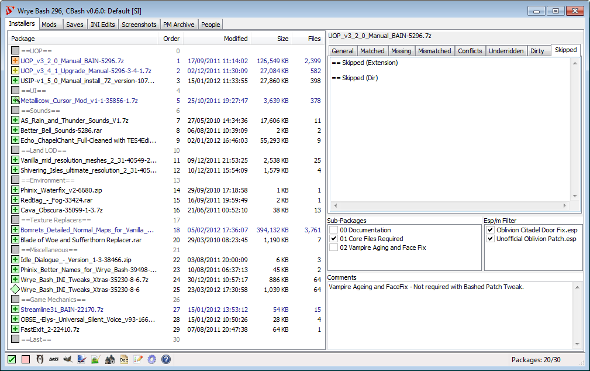
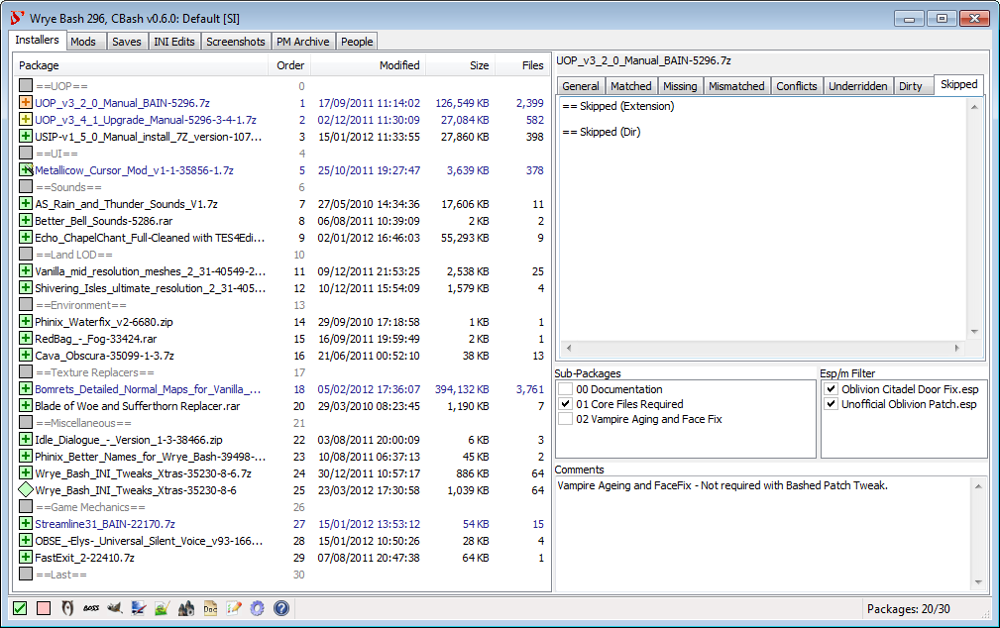
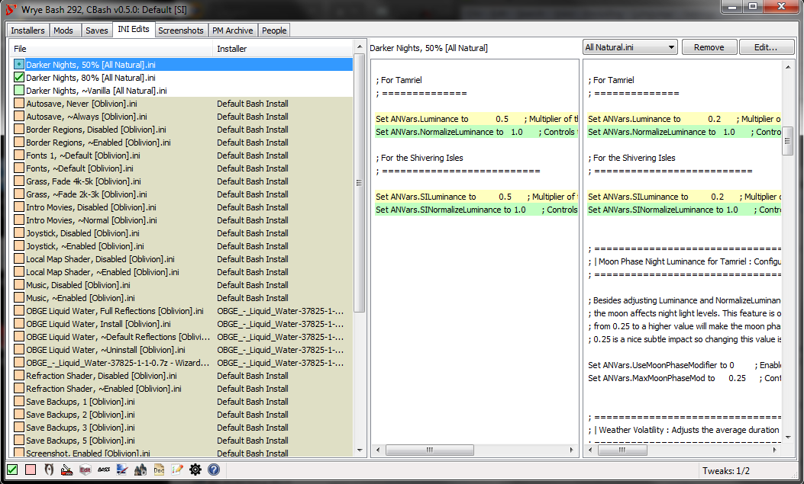
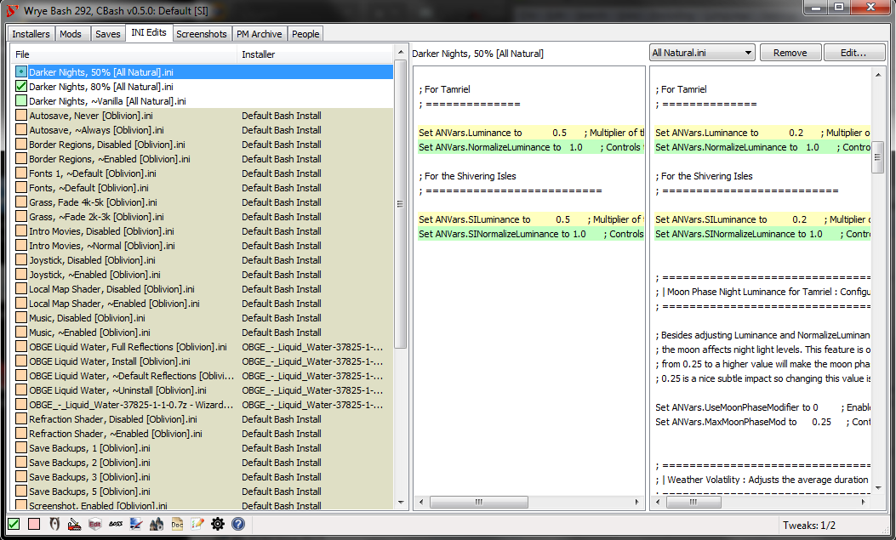

Contents
Introduction Back to top
Wrye Bash is a powerful mod management utility for games based on Bethesda's Creation Engine. Its features include:
- A mod installation and conflict manager
- A plugin load order manager
- Increased mod compatibility
- Lifting of the 255 plugin limit through automatic merging of compatible mods
- .ini and settings files tweak management
- Screenshot management
- And many, many more
It currently supports the following games:
- Enderal: Forgotten Stories (Steam version)
- Enderal: Forgotten Stories: Special Edition (GOG and Steam versions)
- Fallout 3 (Epic Games Store, GOG, Steam and Windows Store versions)
- Fallout 4 (GOG, Steam and Windows Store versions)
- Fallout 4 VR (Steam version)
- Fallout: New Vegas (Epic Games Store, GOG, Steam and Windows Store versions)
- Morrowind (very early support; GOG, Steam and Windows Store versions)
- Nehrim: At Fate's Edge (GOG and Steam versions)
- Oblivion (GOG, Steam and Windows Store versions)
- Skyrim (Steam version)
- Skyrim: Special Edition (Epic Games Store, GOG, Steam and Windows Store versions)
- Skyrim VR (Steam version)
- Starfield (WIP, doesn't even work yet; Steam version)
Wrye Bash can appear daunting at first. To help make it more manageable, the documentation has been split into a few readmes that are targeted towards different usage requirements.
This readme covers only the most commonly used features, so that the average user can start using Wrye Bash without being overwhelmed. Information on the less commonly used features and more technical details of the features covered in this readme may be found in the Advanced Readme. Information on some of the syntaxes and file formats that Wrye Bash uses are found in the Technical Readme. Finally, Wrye Bash's version history is stored in the Version History document.
Glossary Back to top
Modding for Creation Engine games has a wonderful history of confusing terminology. The list below details some terms commonly used when dealing with mods.
- The game is the game that Wrye Bash is managing, one of the ones listed above.
- EGS refers to a game bought from the Epic Games Store.
- GOG refers to a game bought from GOG.com.
- Windows Store refers to a game installed with the Windows Store. This could also be referred to as a Game Pass, Xbox App, or Microsoft Store game.
- CTD is an acronym for Crash To Desktop. Used to describe the game crashing.
- DLC refers to any of the official downloadable content for the game.
- Mod refers to any unofficial user-made modification to the game.
- Mod author refers to a person that makes modifications to the game. It can also refer to those who are involved in the creation of utilities that are used by mod authors and/or users.
- ESM (case-sensitive) or
ESM-flagged file refers to any file that the game
treats as a master. For games before Fallout 4, the
only thing that mattered was a flag inside the file called the ESM
flag. For newer games, files with the extension
.esmare treated as masters too, whether they have the flag set or not. These load before all ESPs (see below). It is an acronym for Elder Scrolls Master. - .esm (case-sensitive) refers to files with the
extension
.esm. See the ESM entry above for notes on how they behave in different games. - ESP (case-insensitive) refers to any file with a
.espextension. It is an acronym for Elder Scrolls Plugin. - ESL (case-sensitive) refers to any file with a flag
called the ESL flag set. Files with the extension
.eslare treated as ESLs whether they have the flag or not. Only Fallout 4 and Skyrim: Special Edition currently support these. Certain restrictions apply as to which plugins can be ESL-flagged. They do not take up a regular load order slot, theoretically allowing up to 4096 ESL plugins to be loaded. - .esl (case-sensitive) refers to files with the
extension
.esl. These automatically receive the ESL and ESM flags. Only Fallout 4 and Skyrim: Special Edition currently support them. - ESU (case-insensitive) refers to any file with a
.esuextension. These are an unofficial type of plugin used by xEdit. It is an acronym for Elder Scrolls Update. - Plugin refers to any of the above file types.
- Master refers to any plugins that another plugin is dependent on to function. (It can also refer to an ESM file, as it used to be that only ESMs could be masters, until mod authors developed methods of using ESP files as masters too. The latter definition will not be used in this documentation.)
- The game's master file refers to the ESM that must be loaded for the game to function. A short table showing the master file for each game follows:
- Conflicts occur when two different mods try to change the same game variable or resource, which could be anything from a specific object in game to a script or a texture. Conflicts can cause problems, including CTDs or save game corruption, but they are not inherently bad, and most modding is the result of purposeful conflicts.
- Resource Conflicts occur when two mods contain two different files that go in the same place, so one mod's file overwrites the others's file. This type of conflict can be managed by altering the install order of mods.
- Data Conflicts occur when two mod plugins alter the same game data. This type of conflict can be managed by altering the load order of plugins or creating patches.
- BSAs are Bethesda Softwork Archives, with
.bsa(All games but Fallout 4) or.ba2(Fallout 4) file extensions. They can be used to store resource files such as textures and meshes. - ITMs are Identical To Master records, i.e. data in a
plugin for something that is identical to the data for that thing in
the plugin's master(s). Usually a type of unintended edit, known as a
dirty edit
, which can break the functionality of other mods that require the record in question to have a specific value, but which have that value overridden by an ITM record. - UDRs are Undeleted and Disabled References. Deleted
References can cause crashes, and this can be avoided by first
undeleting and then disabling them instead. A type of
dirty edit
. Note that this acronym does not refer to the deleted references themselves - it actually refers to their fixed counterparts. For example,Scan For UDRs
will scan for deleted references, not undeleted and disabled references, and BOSS/LOOT will report the UDR count for a plugin, which is actually the number of deleted references that can be fixed.
| Game | Master File |
|---|---|
| Enderal: Forgotten Stories | Skyrim.esm |
| Enderal: Forgotten Stories: Special Edition | Skyrim.esm |
| Fallout 3 | Fallout3.esm |
| Fallout 4 | Fallout4.esm |
| Fallout 4 VR | Fallout4.esm |
| Fallout: New Vegas | FalloutNV.esm |
| Morrowind | Morrowind.esm |
| Nehrim: At Fate's Edge | Nehrim.esm |
| Oblivion | Oblivion.esm |
| Skyrim | Skyrim.esm |
| Skyrim: Special Edition | Skyrim.esm |
| Skyrim VR | Skyrim.esm |
This readme will also use the placeholder [Game]. Replace
this with the game that you're managing with Wrye Bash. Additional
terminology specific to Wrye Bash's functions will be introduced as
required. Also, links that are followed by
 go to pages that are not part of the Wrye Bash documentation.
go to pages that are not part of the Wrye Bash documentation.
Installation Back to top
The simplest way to install Wrye Bash is using the installer, as it installs Wrye Bash and its dependencies automatically. Note: If you want to manage a Windows Store game (since the installer does not and cannot support Windows Store games) or prefer to manually install Wrye Bash for any other reason, read the instructions below.
Note: There are two versions of Wrye Bash available: the Python version and the Standalone version. Both are the same program, but the Standalone version has fewer dependencies and so is recommended for most people.
Windows Vista, 7, 8 & 10 users: Windows' User Account Control feature may interfere with the running of Wrye Bash and other utilities. See the File Permissions section for solutions.
Manual Standalone Version Installation:
- Download and install the latest MSVC Redistributable (x64).
- You now have a choice:
- Extract the downloaded Wrye Bash archive into any folder.
- Extract the downloaded Wrye Bash archive into the game folder (e.g.
Oblivion
,Skyrim
orFallout
, depending on the game) so that the Mopy directory appears in the game folder. - Run Wrye Bash by double-clicking
Wrye Bash.exe
in the new Mopy folder. If you chose the second option above, Wrye Bash will now open. However, you will have to repeat the procedure for each new game you install. If you chose the first option, you will see a game select screen. Simply select one of the listed games to continue:

Manual Python Version Installation:
- Download and install all the required Python libraries and python itself. See the Python Components section of the Advanced readme for the list of included libraries and their versions. If you have previously installed Python and any Python libraries, you may not need to install them again.
- Download and install the latest MSVC Redistributable (x64).
- Extract the downloaded Wrye Bash archive into your game folder (e.g.
Oblivion
,Skyrim
orFallout
, depending on the game) so that the Mopy directory appears by the game executable. See the Alternative Install Locations if you wish to install to a different directory. - Navigate to the Mopy directory and run Wrye Bash by double-clicking
Wrye Bash Launcher.pyw
.
Uninstallation Back to top
The ease with which Wrye Bash can be removed is dependent on how much you use it to manage your modded game.
- If you use a Bashed Patch, you will need to remove any dependencies on it from your saves before uninstalling Wrye Bash in order to avoid in-game issues. This may be near-impossible to do, depending on what is in your Bashed Patch.
- If you use BAIN to manage your installed mods, you will need to ensure that you have an adequate alternative management system ready, as although uninstalling Wrye Bash will not uninstall your mods, you will no longer be able to use BAIN's conflict resolution features.
- If you use any INI tweaks applied through Wrye Bash, you will need to make a note of which tweaks you have applied, as although uninstalling Wrye Bash will not undo your tweaks, you will no longer have any record of tweaks applied or default values.
- If you use the People tab, you will need to transfer your notes on people and record their karma outside of Wrye Bash.
If none of the above points apply to you, or once you have taken the necessary measures for the points that apply, you can uninstall Wrye Bash by either running the uninstaller, if you used the installer to install Wrye Bash, or delete the following files and folders if you installed it manually.
[Game]\Mopy- If you've edited any localisation files in thel10nfolder that you want to keep, back them up.[Game]\Data\Bash Patches- If you've exported any CSV files that you want to keep, back them up.[Game]\Data\BashTags- If you've manually created any tag files that you want to keep, back them up.[Game]\Data\Docs[Game]\Data\INI TweaksDocuments\My Games\[Game]- Only delete theBashProfiles.dat,BashProfiles.dat.bak,BashSettings.dat,BashSettings.dat.bak,Messages.dat,Messages.dat.bak,People.datandPeople.dat.bakfiles and theSaves\Bashfolder.[Game] Mods(in the same folder as [Game] for most games, inDocuments\Wrye Bashfor Windows Store games) - TheBash Installersfolder stores the mods you've installed via BAIN.
Installing Mods Back to top
Overview Back to top
 





 

Wrye Bash mod installer are known as BAIN (BAsh INstallers), and are presented on the Installers Tab.
The first time the Installers tab is opened, a dialog will appear asking if BAIN should be initialized.
If you click Yes
, BAIN will be initialised, which can take some time.
After that, the information refresh performed when the Installers tab is opened is much faster.
BAIN's primary function is to install mod packages.
BAIN Packages can be compressed archives
(.zip, .7z, .rar, .001
or .tar) or uncompressed directories called
projects. When we refer to projects and archives together
we will also be using the collective term packages or
installers.
If BAIN is disabled, i.e. if you clicked No
on the dialog that was displayed the first time you selected the Installers tab, it can be re-enabled by right clicking on a column header in the Installers tab and selecting Enabled.
Packages need to be placed in the Bash Installers directory which is created the first time Bash runs inside the "Game" Mods directory. This directory is by default
created on the same level as your game directory (that is, if your game exe is located in "C:\GAMES\TESIV\Oblivion", then by default Bash will create the "C:\GAMES\TESIV\Oblivion Mods\"
directory on first run), but you can point Bash to create this "Game" Mods directory wherever you want (or point it to an existing one) via the sOblivionMods ini setting. Do
not however put it inside the game Data directory, as the game may well be confused and scan it adding to performance deterioration, mods thrashing.
To add an installer to Wrye Bash Installers, you can either manually copy and paste the zip to the Bash Installers Directory, or just drag and drop the zip onto the Installers tab.
Bash will scan the Bash Installers directory and pick up all subfolders and all archives - except for:
- folders or files that begin with
--will be skipped - a
Bain Converterssubdir of Bash Installers will be skipped - folders or files that begin with
bashwill be skipped - you may specify additional directories to be skipped via the
sSkippedBashInstallersDirsini setting
Now BAIN will try to classify the packages it detected in Bash Installers into its package formats - if it fails the package will display as unrecognized and will have to be restructured.
BAIN-Compatible installer layout Back to top
When scanning an installer (package or project) BAIN follows some rules to decide what's in there and if it can be installed. BAIN will search for specific directories and file extensions (bsa/ba2, ini, all plugin extensions). All directory detection is case insensitive. Directories BAIN is aware of, independent of the game, are:
| Wrye Bash Directory | Notes |
|---|---|
| bashtags | Its contents will be copied into
Data/BashTags. |
| bash patches | BAIN will install files in this folder from packages, usually
in the form of .csv files. |
| docs | Its contents will be copied into Data/Docs. |
| ini tweaks | INI tweaks inside this will be installed in
Data/INI Tweaks and appear on the INI Tab - do
not include subfolders in
ini tweaks. |
| screenshots | Its contents will be copied into Data/Docs. |
| screens | Its contents will be copied into Data/Docs. |
| ss | Its contents will be copied into Data/Docs. |
| Game Directories Supported For All Games | |
|
ini, meshes, music, sound,
textures, video
|
|
There are also game-specific directories:
| Game | Extra Game Directories |
|---|---|
| Morrowind | animation, bookart, distantland, fonts, icons, mwse, shaders, splash |
| Oblivion | _tejon, config, distantlod, enhanced economy, facegen, fonts, knights - revelation music, menus, obse, pluggy, scripts, shaders, streamline, trees |
| Fallout 3 | config, distantlod, facegen, fonts, fose, menus, uio, scripts, shaders, trees |
| Fallout: New Vegas | config, distantlod, facegen, fonts, menus, nvse, uio, scripts, shaders, trees |
| Skyrim | asi, autobody, calientetools, dialogueviews, dragonbornvoiceover, dyndolod, flm, grass, interface, kreate, lodsettings, mapmarkers, mapweathers, mcm, mlq, nemesis_engine, netscriptframework, osa, platform, scripts, seasons, seq, shaders, shadersfx, skse, skyproc patchers, slanims, strings, tools |
| Fallout 4 | dtf, f4se, interface, lodsettings, materials, mcm, misc, programs, scripts, seq, shadersfx, strings, tools, vis |
There are, loosely speaking, three types of BAIN-compatible package structures:
| Structure | Description |
|---|---|
| Simple | Installer has .esp, .esm and/or .bsa files, and/or any of the standard game subdirectories at the top level of the package/project. |
| Complex | Installer has top-level subdirectories that each have a simple structure (as defined above). The top level
subdirectories (known as sub-packages) must NOT have the same name as any of the standard game directories for this game
(like docs, or meshes). Otherwise BAIN thinks this is a simple package and will skip sub-packages. Each top-level subdirectory will be treated as a sub-package, and can be independently activated or deactivated as desired. |
| Complex/Simple | A complex installer with only one top-level subdirectory. It is treated as a simple installer, starting at this top level subdirectory. Examples include mods packaged with a top-level Data directory. |
Restructuring Packages to be BAIN-Compatible Back to top
The easiest way to tell if a package needs manual converting to be compatible with BAIN is to try installing it. If it is listed in the Package list with a grey checkbox and name, then BAIN cannot install it. Due to BAIN's flexibility, many mods are already packaged in ways that are compatible, but for those that are not, there are a few possible cases:
- The mod has a BCF. BCFs are special packages that tell BAIN how to restructure the mod to be compatible with BAIN without the user having to do any work.
- The mod is distributed as an OMOD (i.e. has file extension
.omodor.fomod). These mods are intended for installation with the Oblivion Mod Manager or Nexus Mod Manager. Such mods usually have a non-OMOD download option: if one is available, download that instead as it is more likely to be compatible. Otherwise, OMOD files can be converted to Projects automatically by dragging and dropping them into the Installers tab. - The mod is distributed as an archive, or is a converted OMOD Project, but doesn't have a folder structure that BAIN recognises. It will need manual restructuring.
- The mod is distributed as an executable (i.e. has file extension
.exe). This is very rare, as mods do not require the complexity of executables, and the greater security risk executables represent makes their use unpopular. BAIN cannot install mods distributed in this way: often the only way to install them is to run the executable. You can often run the installer, installing to a dummy folder, and then repack theinstalled
files into a BAIN-compatible format.
If an archive has a BCF, it can be converted for installation with BAIN using the following instructions.
- Ensure that the BCF is installed in the correct location,
[Game] Mods\Bash Installers\Bain Converters. Also ensure that the archive(s) it converts is/are in[Game] Mods\Bash Installers. - From the BAIN installers list, select the archive(s) to be converted (i.e., the
source
packages) and right click on the selected file(s) to bring up the context menu, and select Conversions to open the sub-menu. - Click on Apply to open a second sub-menu and select the BCF from it. There may be more than one BCF listed if multiple installed BCFs can convert the selected package(s). An asterisk ('*') is added to the end of a BCF's name for every archive it converts that isn't selected.
- Optionally choose a name for the converted archive(s).
- Once Wrye Bash has finished the conversion, the converted archive(s) will appear in the BAIN package list ready for install. You can now delete the original archive(s).
If a package is unrecognised by BAIN and has no associated BCF, its contents will have to be rearranged so that the structure matches one of the three types of BAIN-compatible package structures.
Installing/Uninstalling Via BAIN Back to top
Packages must first be placed in the [Game] Mods\Bash Installers directory. This can either be done via Windows Explorer, or by dragging and dropping the package into the Wrye Bash window when the Installers tab is open. If you drag and drop, you will be asked whether you want to copy the package or move it.
For the most part, you can simply right-click the package and select Install..., which will automatically use wizards and FOMODs if they are present, and fall back to manual configuration if they are not. If you want to learn more about each type of package and how to install and configure their options manually, read on.
If a package contains a BAIN wizard (i.e. there is
 overlaid on its checkbox):
overlaid on its checkbox):
- Right-click the package and select Install.... Alternatively, select Advanced Installation.. > Wizard Installer.. > Manual Wizard.... You can also choose to install using the Wizard's default options by selecting Auto Wizard....
- Navigate through the steps of the wizard to install the package. If you picked Auto Wizard..., you will instead be skipped to the wizard finish screen.
- At the wizard's finish screen, click the
Finish
button to apply its selections.
If a package has an FOMOD wizard (i.e. there is an FOMOD radio button):
- Right-click the package and select Install.... Alternatively, select Advanced Installation.. > FOMOD Installer.. > Run FOMOD.... Note that Install... will prefer BAIN wizards over FOMOD wizards, so you may have to use this alternative method from time to time, e.g. if a BAIN wizard turns out not to work.
- Navigate through the steps and choose options.
- At the wizard's finish screen, click the
Finish
button to apply its selections.
If a package has a Simple or a Complex/Simple structure:
- Select the package in the package list.
- Choose which plugins to install from it using the
Plugin Filter
box to the far right of the package list. Checked plugins will be installed, while unchecked plugins will be skipped. - Right-click the package and select Install....
If a package has a Complex structure:
- Select the package in the package list.
- Choose which sub-packages to install from the
Sub-Package
box to the right of the package list. Checked sub-packages will be installed, while unchecked sub-packages will be skipped. - Choose which plugins to install from it using the
Plugin Filter
box to the far right of the package list. Checked plugins will be installed, while unchecked plugins will be skipped. - Right-click the package and select Install....
If you install a package then later change the sub-packages or plugin files selected, you can apply these changed by right-clicking the package in the list and selecting Anneal. A Wizard provides a scripted installation method that can be useful for more complex mods with many options.
When a package is installed, BAIN installs any files that appear to be documentation into the Data\Docs folder. Any files that are simply named readme
(e.g. readme.txt, readme.html, readme.doc) will be renamed according to the package name to prevent packages overwriting each other's readmes.
To uninstall any package from the Installers tab select the package and right click on it, then select Uninstall. This will uninstall all Matched files. However, BAIN will not uninstall mismatched files.
A mismatched file is a file that has been altered after it was installed. The reason BAIN does not uninstall mismatched files is BAIN has no way of tracking the source of the alteration if it was not done through BAIN. For example, if the file was altered because it was replaced by another mod that was installed manually, then uninstallation of the mismatched file may not be desirable. On the other hand, if the file was altered because it was cleaned or edited with TESxEdit, or because it was an ini file that was edited with a text editor, then it may be desired to uninstall the mismatched file along with the package that it came from.
Such files could be deleted from the data folder manually, but there is an easy way to do this through BAIN. Before uninstalling the mod, first select the package and right click on it, then select Advanced Installation > Install Configured. This will overwrite any mismatched files with the version of the file contained in the package, making them Matched. Now select Uninstall and BAIN will uninstall all installed files associated with this package.
An alternative, if you want to keep the mismatched file in the to-be-uninstalled package, is to use Sync From Data....
You can also uninstall packages that BAIN hasn't installed, which will remove any installed files that match the ones in the package. This is useful for cleaning out mods that were manually installed. Of course you need to add the packages to BAIN first. Uninstalling via BAIN respects the ownership of files, i.e. uninstalling a mod that contains files also installed by a mod listed lower in the installation order will not uninstall the lower mod's files. See the next section, BAIN Package Order for more on this. However, if the Auto-Anneal option is enabled (the default), then files from other packages previously overridden by the uninstalled package's files will be automatically restored.
BAIN Package Order Back to top
The Install Order of packages in BAIN is important as this decides which package gets its files installed in the case of resource
conflicts.Packages may be listed in Install Order by left-clicking on the Order
column header. If two packages try to install the
same file, then the package installing later in the list will have its file overwrite the file of the package installing earlier in the
list. For example, files in a package in install order position 06, would overwrite conflicting files in a package at install order
position 04. Note that packages with a higher install order appear lower in the list of packages, and that may lead to confusion as
people refer to them as "lower".
The order of sub-packages within a package follow the same rules as packages. Checked sub-packages later (lower) in the sub-package list will overwrite conflicting content from sub-packages earlier (higher in the list) than them.
Package conflicts are detailed in the Conflicts
tab to the right of the package list when you select a package. This tab tells you
which packages have which files that conflict with files in your currently-selected package. It gives this information for packages in
the Install Order both earlier and later than the selected package in the package list.
BAIN allows you to easily adjust the conflict status of packages by moving their order around. This can be done by dragging and dropping packages within the list, or by right-clicking packages and selecting the Move To... option. You can also select multiple packages and move them, in which case they will be moved as a group, retaining their order relative to one another in their new location. A third option is to select the package(s) and use Ctrl+Up Arrow (↑) or Ctrl+Down Arrow (↓) to move them up or down, respectively.
What Symbols & Colours Mean Back to top
BAIN uses the colours of packages in the package list and the state of their checkboxes to convey information about their status to the user. A checkbox state may be combined with any checkbox or text colour, and the possible states and colours are described in the tables below.
Note: Installed packages are marked with a plus, e.g.  . Corrupt or incomplete packages are marked with a cross, e.g.
. Corrupt or incomplete packages are marked with a cross, e.g.  . Packages that begin and end with
. Packages that begin and end with ==
, e.g. ==Last==
, are marker packages. They don't represent an archive or folder and so contain no files, but may be used to organise the package list.
| Checkbox Shape | Meaning |
|---|---|
| The package is a Project, i.e. a directory rather than an archive. | |
| The package is an archive. |
| Checkbox Colour | Meaning |
|---|---|
| All the files in the package are installed as configured. | |
| Some or all of the files in the package are not installed as configured. | |
| All the package files are installed, but the .esp/.esm plugins are not identical (e.g. another package has overwritten them with another version of the plugins). | |
| All the package files are installed, but some resource (i.e. non-plugin) files are not identical (e.g. another package has overwritten them with another version of the files) | |
| The package, as configured, has no files to install. This can happen for complex packages where none of the sub-packages are selected for installation. | |
| BAIN does not recognise the structure of this package so cannot install it. | |
| The package is corrupt or can not be read by BAIN for some reason. |
| Text Formatting | Meaning |
|---|---|
| Navy Blue | The package contains sub-packages. |
| Grey | BAIN does not recognise the structure of this package so cannot install it. |
| Orange Background | The install is dirty. This will occur for packages for which the configuration has been altered (either by altering active sub-packages and esmps, or by altering the package itself). This can be repaired by running Anneal or Anneal All. |
| Yellow Background | The package has "underrides" i.e. some of its installed files should be overridden by higher order packages. This may happen after reordering mods that have already been installed. It can be repaired by running Anneal or Anneal All. |
| Grey Background | Some files present in the package will not be installed. This can be due to having a complex structure only partially handled by BAIN, or having file types that BAIN skips. This can sometimes be fixed by telling BAIN that the package has extra directories by selecting in the right-click menu. |
Useful Context Menu Commands Back to top
The following commands found in the package and column header context (i.e. right-click) menus are often useful for many users.
| Column Header Context Menu | ||
|---|---|---|
| Command | Description | |
| Files.. | Open Folder... | Open the Bash Installersdirectory in your system's default file explorer. You can press Ctrl+O to the same effect. |
| New Marker... | Create a marker for organising your packages. The
==will be added for you. You can press Ctrl+Shift+N to the same effect. |
|
| Data.. | Clean Data... | Remove content that isn't from the vanilla game or installed
via BAIN from the Data folder. The files are not deleted, but
moved to the [Game] Mods/Bash Installers/Bash
folder instead. |
| Refresh Data | Re-scan the Data directory and all project directories. This is done once per run of Wrye Bash, when the Installers tab is first opened. If you manually alter the directories after that, you should run this command to update BAIN to reflect the changes. BAIN refreshes itself automatically if changes are made to packages in the Bash Installers directory. | |
| Packages.. | Anneal All | Install any missing files for active packages and correct all install order errors. |
| Uninstall All Packages | Uninstall all packages. | |
| List Packages... | Display a list of projects and archives and copy the list to your clipboard. This is useful for posting your package order on forums, e.g. when troubleshooting an install. | |
| Package Context Menu | ||
|---|---|---|
| Command | Description | |
| File.. | Open... | Open the selected packages in the file system. You can double-click a package or press Enter to the same effect. |
| Rename... | Rename the selected packages or markers. You can click on an already selected item or press F2 to the same effect. | |
| Duplicate... | Create a copy of the selected packages. | |
| Delete | Delete the selected packages and/or markers. Deleted packages are sent to the Recycling Bin, not permanently deleted. | |
| Open At.. | Attempt to open the selected package's page on the selected site. If Google is selected, performs a Google search for the package name. For the other two sites, this command assumes that the trailing digits in a package's name is the package ID at the sites. If this assumption is wrong, a random page, or an error page, will be opened. | |
| Open Readme | Open the package's readme, if BAIN managed to find one in it. | |
| Anneal | Install missing files and correct install order errors according to the package configuration. | |
| Quick Refresh | Refresh all info for the selected package(s). Useful if BAIN's information about a package has gone out of sync with the Data folder, e.g. because you manually changed something in it. | |
| Move To... | Move the selected packages to the specified position. | |
| Sync From Data... | Copy files from the Data folder into this package that are also in the package, but whose contents differ. Useful if you altered a file from this package, e.g. by cleaning it in xEdit, and now want to update the package contents to match. | |
| Install... | Install the selected packages, preferring a visual method if possible. | |
| Uninstall | Uninstall the selected packages. | |
| Package.. | List Structure... | Generate a list of the files and directories in a package and copy it to your clipboard. Useful for posting package structure on forums, e.g. when troubleshooting an install. |
Setting Up Load Order Back to top

Overview Back to top
Wrye Bash displays your installed plugins in its Mods
tab. Your load order of active installed plugins, which Wrye Bash marks with a
ticked checkbox, is important as it decides what plugin 'wins' any conflict between plugins, with later loading plugins overriding those
that change the same thing. A mod loading later in the list will have a greater number in the Load Order column, and will "win"
if there's a conflict with a mod loading earlier (which will have a lower number). Load order is not the same thing as BAIN install
order! Install order determines which package's files overwrite other packages files when they conflict.
Although in general "Load Order" stands for the load order of the active plugins, all installed plugins have a load order assigned
to them. In Oblivion, Nehrim: At Fate's Edge, Fallout 3 and Fallout: New Vegas this is based on the modification time of the plugin,
in Skyrim and Enderal: Forgotten Stories it is based on a text-file based standard the community agreed on,
while Fallout 4 and all later games dump all installed plugins in its plugins.txt, marking active ones with an asterisk (*).
Bash needs plugin load order even for inactive plugins to correctly merge inactive mods in the Bashed Patch, for instance.
Plugins may be activated by clicking their checkbox so that it is ticked, or by selecting a plugin or group of plugins and pressing the space bar on your keyboard. Plugins may be deactivated by again clicking their checkbox or pressing the spacebar. If a group of selected plugins contains a mix of active and inactive plugins, pressing the space bar once will activate them all, thereafter it will function as normal.
Some plugins are explicitly dependent on other plugins - they have these plugins as masters
. When a plugin is activated, its masters are also activated. Conversely, when a plugin upon which other plugins depend is deactivated, those plugins are also deactivated.
When setting the load order, make sure that Wrye Bash is displaying your plugins sorted by Load Order. Do so by clicking on the Load Order column header near the top of the tab. You can also display the plugins sorted by other attributes by clicking on any of the other column headers. Clicking twice will reverse the display order for any column but Load Order. The load order of plugins is given in hexadecimal digits, from 00 to FE, which is 0 to 254 in decimal. (This number also forms the first two digits of a record's Form ID.)
Note that you can only have a maximum of 255 plugins active at any one time, including your game's master file.
Wrye Bash displays a plugin count in its status bar, to the right hand side, in the format Mods: [active]/[installed].
Generally speaking, if you end up with an invalid load order of some kind, Wrye Bash will automatically fix it upon booting or refreshing,
but a backup copy (with the .bak extension) will be made before doing so.
With the advent of ESL files, the load order system was modified. The following list contains the most important facts you need to know about how Wrye Bash handles ESL files:
- .esl files implicitly receive the ESM flag, so they load among masters in the order of the plugins txt.
- .esl files implicitly recieve the ESL flag, so they are always treated as light plugins.
- ESPs with the ESL flag are also treated as light plugins.
- ESLs can surpass the 255 mod limit - Wrye Bash allows up to 4096, the theoretical limit, but your game will likely give up long before that number is reached.
Creation Club ESL files (of the form cc*.esl) are read from the game's .ccc file, if the game has Creation Club support.
For example, Skyrim: Special Edition uses [GAME]\Skyrim.ccc, while Fallout 4 uses [GAME]\Fallout4.ccc.
Just like the game's masters, this load order is hardcoded, and so it cannot be changed - Wrye Bash will show an error message when an attempt is made.
Setting The Load Order Back to top
Setting up a correct load order that minimises detrimental conflicts that could cause issues in-game can be a difficult and time-consuming process. Effective load-ordering often requires a knowledge of what each plugin in your load order contains so that you can position the plugins to minimise these conflicts. For simple mods, the description in the mod's readme will usually be sufficient to determine the records it contains, but to be sure a utility such as xEdit is required.
LOOT can be used to greatly simplify the process of setting the load order, as it can correctly position thousands of plugins automatically. However, you may still need to order some plugins manually.
Wrye Bash provides a number of ways for you to set up your load order:
- Alphabetical sorting by selecting a group of plugins and choosing File->Sort from the right-click menu.
- Moving plugins up or down the load order by selecting them and using Ctrl-Up or Ctrl-Down respectively. This also works with groups of plugins and preserves the group's internal order.
- Dragging and dropping plugins will also change the load order if the plugins are being sorted by Load Order.
- Timestamp-based games only. Selecting a group of plugins and choosing File->Redate from the right-click menu. This will move the first plugin to the specified date/time and position the others at one minute intervals after it.
- Timestamp-based games only. Editing plugin modification dates in the right-hand details panel.
When running Wrye Bash, you can also lock your load order in place to prevent unintended changes to it by selecting the Lock Load Order option in the column header right-click menu. Note that this will prevent other utilities from changing the load order, so uncheck this option if you use such a utility to set your load order. If you use BOSS/LOOT to manage your load order and you also use Lock Load Order, ensure Suspend Lock Load Order is also enabled to allow BOSS/LOOT to function correctly.
Note that for Skyrim and later games Wrye Bash will automatically undo any changes to load order done made by the game's launcher or any utility that does not follow the textfile-based load order standard in order to maintain a fully coherent load order. This effectively means that unintended changes are prevented.

The Launch Using GUI
toggles the use of the command line interface for BOSS with the BOSS GUI. Giving quick and easy access to the additional features the GUI provides such as the Edit User Rules
option.
Undo and redo Load Order changes Back to top
Bash features a sophisticated undo/redo load order feature, comprising both load order changes of active or inactive
plugins and activating/de-activating plugins. Whether you activate a plugin, drag and drop it in another position, deactivate a
plugin (having its children deactivated too) etc, you can always hit Ctrl+Z while the list of mods has focus to undo
the operation or Ctrl+Y/Ctrl+Shift+Z to redo it. Bash keeps the load orders (meaning total load order of all installed plugins
and active state of the plugins) in its internal structures and will persist those on disc on shutting down,
in My Games\<Game>\BashLoadOrders.dat, so you can undo/redo on restarting Bash.
The undo/redo feature will try to preserve as many load orders as possible - so unlike undo/redo in other applications if you have an initial load order state A then change it to B, then hit undo (so you are back on state A), then change it to C Bash will keep in its internal structures the load order states A C B while most other applications would end up with A C. Undo/redo load order state is a relatively new feature (available since 307) so it may have rough edges.
What Symbols & Colours Mean Back to top
Like in the Installers tab, Wrye Bash uses colour-coding and other formatting effects to convey information about the state of plugins. The different types of formatting used and their meanings are explained here. Many of these can be changed in the Color Configuration menu.
| Checkbox Type | Meaning |
|---|---|
| Plugin is active. | |
| Plugin is merged into an active Bashed Patch. | |
| Plugin is imported into an active Bashed Patch. | |
| Plugin is not active, merged or imported. |
| Checkbox Colours | Meaning |
|---|---|
| The plugin's masters are all in exactly the same order as is specified in the plugin. | |
| The plugin's masters are in the same order as is specified in the plugin, but their precise positions are different (i.e. there are other mods between them). This is not an issue, and can be considered to be just as good as having a blue checkbox. | |
| Some of the plugin's masters are in a different order than what is specified in the plugin. This will be handled automatically by the game, but may hint at an incorrect load order on either your or the mod author's end. | |
| This plugin loads before one or more of its masters. This will either cause the game to crash or cause mods to load in unexpected ways and must be corrected. | |
| One or more of the plugin's masters is missing. This will generally cause the game to crash on startup, and must be corrected. |
| Text Formatting | Meaning |
|---|---|
| Blue Text | A master - refer to ESM documentation at the start of this document for more information. |
| Green Text | A mergeable plugin (for games without ESL support) or one that can be ESL-flagged (for games with ESL support). |
| Pink Text | Only for games with ESL support. An ESL-flagged plugin. |
| Purple Text | Only for games with ESL support. An ESL-flagged plugin that is also a master. The color is a combination of the blue one for masters and the pink one for ESLs. |
| Yellow Text | Only for games without ESL support. A plugin that
should not be merged (i.e. tagged with
NoMerge). |
| Pink Background | Oblivion, Nehrim: At Fate's Edge, Fallout 3 & Fallout: New Vegas only. A plugin that shares its modification date with another plugin. Not a problem unless both plugins are active. |
| Red Background | Oblivion, Nehrim: At Fate's Edge, Fallout 3 & Fallout: New Vegas only. An active plugin that shares its modification date with another active plugin. This must be corrected so that they have different modification dates or else it may break your load order. |
| Light Orange Background | Morrowind only. In Morrowind, plugin files contain
DATA subrecords that store the size of the
plugin's masters when it was created. If a stored size does not
match the one on disk, Wrye Bash will highlight the
corresponding master in this color. Also used for plugins that
have at least one such size-mismatched master. This is a
very low priority warning and can almost certainly be
ignored. |
| Grey Background | A ghosted plugin. |
| Slanted Text | A plugin that is recommended to be imported and deactivated
(i.e. tagged with Deactivate). |
| Underlined Text | A plugin identified as having dirty edits (Identical to Master, Deleted References, or otherwise necessary cleaning). |
Useful Context Menu Commands Back to top
The context menus for the column headers and plugins contain a large number of commands, most of which are unlikely to be of use to the average user so are not detailed here.
| Column Header Context Menu | ||
|---|---|---|
| Command | Description | |
| Files.. | New Bashed Patch... | Creates a new Bashed Patch plugin. Useful if you accidentally delete your current one or wish to have more than one. |
| List Plugins | This lists the load order, including version information, activation status and major load order errors. It can be useful for debugging a broken load order. If the Shift key is held when this command is selected, the CRCs of plugins will also be displayed in the output. If the Ctrl key is held, then the versions of plugins will not be shown in the output. | |
| List Bash Tags | This lists all the Bash Tags applied to the plugins in your load order, and where/how the Bash Tags were specified. It can be useful for debugging a broken load order. | |
| Auto-Ghost | The Oblivion game engine has a bug where it reads all the plugins in the Data folder,
and this can affect performance when the number of plugins is around 300+. In Skyrim there is a different problem, namely if you have over
508 mod files in your data directory, the engine just plain refuses to load any of them, active or not (see here:
Thrashing, thread #1, post #1). Auto-Ghosting adds a .ghostextension to all inactive plugins automatically to prevent the game engine reading them, and so helping to avoid the performance drop. When a ghosted plugin is activated, the .ghostextension is removed, allowing it to function as normal. Note that most other utilities will not recognise ghosted plugins, so there are options available for individual plugins to control which get ghosted. Bash displays a warning if a lot of mods and BSAs are detected that you can disable via the ini. | |
| ESL-Flag Bashed Patches | Skyrim: Special Edition & Fallout 4 only. If enabled, then any built Bashed Patches will automatically be ESL-flagged, saving a load order slot. | |
| Lock Load Order | This prevents other utilities from altering your load order. More accurately, it detects changes to your load order when Wrye Bash starts or is focused (i.e. on top of all other program windows) and reverses those changes. | |
| Plugin Context Menu | |
|---|---|
| Command | Description |
| List Masters... | Outputs a list of the selected plugin's masters. |
| List Bash Tags... | Outputs a BBCode-formatted list of all the Bash Tags applied to the selected plugin, and where/how the Bash Tags was specified. It can be useful for debugging a broken load order. |
| Create LOOT Entry... | Creates LOOT masterlist entries based on the tags you have applied to the selected plugin(s). Also tries to figure out the URL that the plugin came from based on the BAIN package it was installed from. |
| Copy Mod Info... | Outputs a report on the selected plugins(s) with the info from the currently displayed columns. |
| Don't Ghost | Don't ghost this plugin when it is inactive, even if Auto-Ghost is enabled. |
| Ghost | Ghost this plugin when it is inactive even if Auto-Ghost is disabled. |
| Rebuild Patch... | Rebuild the selected Bashed Patch using the Python patcher. |
Setting Up A Bashed Patch Back to top
Overview Back to top


A Bashed Patch is a configurable plugin with three main functions:
- Merging plugins into itself. Merged plugins can be deactivated, avoiding the 255 plugin limit.
- Importing specific types of data records from plugins. This can be used to avoid compatibility issues.
- Applying tweaks to the game. This avoids the need to use other mods to apply the same tweaks.
Bash Configuration Back to top
A Bashed Patch is created by Wrye Bash the first time you run it, with the plugin being called Bashed Patch, 0.esp
. It is configured using the plugin context menu command Rebuild Patch.... You should rebuild your Bashed Patch every time you change your load order, before playing the game. The Bashed Patch should be last in your load order, unless you have plugins that explicitly state that they must load last.
The configuration dialog consists of a list of major sections to the left, and the contents of the selected section to the right, with the build and save buttons at the bottom. The sections and their items have checkboxes: checking a section will include all its checked items in the Bashed Patch. Unchecked sections and items will not be included. Some sections don't have any items, and so just need the section checkbox checked.
A short description of each section and some items is displayed near the bottom of the window if the section/item is hovered over. Bolded items are new since the last time the Bashed Patch was built, italicized items will not run because they have no active sources (e.g. no mods to import). Wrye Bash will usually do a good job auto-configuring most sections, but you may want to alter options, especially in the Tweak section.
| Bashed Patch Configuration Buttons | |
|---|---|
| Button | Description |
| Build Patch | Builds your Bashed Patch with the current configuration. |
| Select All (next to section list) | Selects all the options/plugins in a section list. If an option has multiple possible values, the first value in the value list will be chosen. |
| Deselect All (next to section list) | Deselects all the options/plugins in a section list. |
| Select All (at bottom of window) | Selects all sections, and all the options/plugins in all sections. If an option has multiple possible values, the first value in the value list will be chosen. |
| Deselect All (at bottom of window) | Deselects all sections and all the options/plugins in all section list. |
| Revert To Default | Reverts your Bashed Patch to its default configuration. |
| Revert To Saved | Restores the last saved configuration of your Bashed Patch, undoing any changes since you last built it. |
| Export | Saves your Bashed Patch's configuration into an external file for backup. |
| Import | Restores your Bashed Patch's configuration from an exported patch configuration. |
Merging Plugins Back to top
Plugins that contain only certain types of data records can be merged into the Bashed Patch. This then allows these plugins to be deactivated, freeing up space in your load order.
If you're merging plugins in, you do not need the plugins active to do so. In fact, trying to merge them in Bash will 1 - ask you to deactivate them before hand, and 2 - deactivate them even if you refused that prompt after the Bashed Patch has been created. So if you're merging plugins, leave them inactive before building, then select to merge them in the Bashed Patch build dialog. Don't worry, all the algorithms for the rest of the patchers still work as you'd expect on plugins merged this way.
You should check the checkboxes of all the plugins listed in the Merge Patches
section, and ensure the section is checked too.
Do not remove merged mods from your Data folder. They will need to be present when you next rebuild your Bashed Patch.
Importing From Plugins Back to top
Plugins can be tagged with Bash Tags that tell Wrye Bash that they contain certain changes that should be preserved even if another mod also changes the same things. This is usually because the changes are important to the functionality of the mod. Wrye Bash then allows you to choose which plugins should have which types of changes preserved, by selecting from the various Import sections when building a Bashed Patch.
If a section's description in the table below begins with Preserves
and two or more mods in its list change the same thing, then the later-loading plugin will override the other plugin(s). Otherwise changes are merged.
| Section | Description | When You Should Use It | Available For |
|---|---|---|---|
| Import Actors | Preserves changes made to actors (i.e. NPCs and creatures) by the mods selected. | Always, unless you are told otherwise by a mod's readme. | All games |
| Import Actors: AI Packages | Merges the changes made to actor AI packages by all the mods selected. | Always, unless you are told otherwise by a mod's readme. | All games |
| Import Actors: Faces | Preserves the changes made to NPC faces by the mods selected. | The decision is entirely based on user preference. Choose whichever mods' NPC faces you prefer. | Oblivion, Nehrim: At Fate's Edge, Fallout 3 & Fallout: New Vegas |
| Import Actors: Factions | Preserves the changes made to the factions an actor belongs to by the mods selected. | Always, unless you are told otherwise by a mod's readme. | All games |
| Import Actors: Perks | Merges the changes made to the perk list of NPCs by the mods selected. | Always, unless you are told otherwise by a mod's readme. | All games since Skyrim |
| Import Actors: Spells | Merges the changes made to the spells actors have by the mods selected. | Always, unless you are told otherwise by a mod's readme. | All games |
| Import Cells | Preserves the changes made by the mods selected to cell settings such as lighting, climate, music, name, owner, water and more. | Always, unless you are told otherwise by a mod's readme. | All games but Fallout 4 |
| Import Destructible | Preserves the changes made to the ability to destroy certain parts of the environment. | Always, unless you are told otherwise by a mod's readme. You will have to use this if a mod that allows you to destroy part of the environment is installed. | All games since Fallout 3 |
| Import Effect Stats | Preserves the changes made to the stats of magic / base effects. | Always, unless you are told otherwise by a mod's readme. | All games |
| Import Enchantments | Preserves the changes made to the enchantments of items like armor, weapons, etc. These are also sometimes called 'object effects', depending on the game. | Always, unless you are told otherwise by a mod's readme. | All games |
| Import Enchantment Stats | Preserves the changes made to the effect data of enchantments. These are also sometimes called 'object effects', depending on the game. | Always, unless you are told otherwise by a mod's readme. | All games |
| Import Graphics | Preserves the changes made by the mods selected to various textures and models throughout the game. | The decision is entirely based on user preference. Choose whichever mods' graphics you prefer. | All games but Fallout 4 |
| Import Inventory | Merges the changes made to the items in various types of inventories by the plugins selected. | Always, unless you are told otherwise by a mod's readme. | All games |
| Import Keywords | Preserves the changes made to the keywords attached to various things throughout the game by the mods selected. | Always, unless you are told otherwise by a mod's readme. | All games since Skyrim |
| Import Names | Preserves the changes made to various names throughout the game by the mods selected. | The decision is entirely based on user preference. Choose whichever mods' names you prefer. | All games |
| Import Object Bounds | Preserves the changes made by the mods selected to the bounds of many types of objects throughout the world. | Always, unless you are told otherwise by a mod's readme. | All games since Fallout 3 |
| Import Outfits | Merges the changes made to the items in NPC outfits by all the mods selected. | Always, unless you are told otherwise by a mod's readme. | All games since Skyrim |
| Import Races | Preserves changes made by the mods selected to various race attributes such as height, eyes, hair and voice. | Always, unless you are told otherwise by a mod's readme. | Oblivion, Nehrim: At Fate's Edge, Fallout 3 & Fallout: New Vegas |
| Import Races: Relations | Merges additions, changes and deletions to race-faction relations. | Always, unless you are told otherwise by a mod's readme. | Oblivion, Nehrim: At Fate's Edge, Fallout 3 & Fallout: New Vegas |
| Import Races: Spells | Merges additions, changes and deletions to race abilities and spells. | Always, unless you are told otherwise by a mod's readme. | All but Fallout 3, Fallout: New Vegas & Fallout 4 |
| Import Relations | Merges additions, changes and deletions to faction relations. | Always, unless you are told otherwise by a mod's readme. | All games |
| Import Roads | Preserves the changes made by the mods selected to the landscape's roads. | Always, unless you are told otherwise by a mod's readme. | Oblivion & Nehrim: At Fate's Edge |
| Import Scripts | Preserves the changes made by the mods selected to the scripts attached to things in the game. | Always, unless you are told otherwise by a mod's readme. | Oblivion, Nehrim: At Fate's Edge, Fallout 3 & Fallout: New Vegas |
| Import Sounds | Preserves the changes made by the mods selected to various sounds in the game. | The decision is entirely based on user preference. Choose whichever mods' sounds you prefer. | All games but Fallout 4 |
| Import Spell Stats | Preserves the changes made by the mods selected to spells in order to fix bugs or rebalance them. These are also sometimes called 'actor effects', depending on the game. | Always, unless you are told otherwise by a mod's readme. There is an element of user preference, for instance if you are using several mods that overhaul spell stats. In such cases, choose whichever mods' stats you prefer. | All games but Fallout 4 |
| Import Stats | Preserves the changes made by the mods selected to items in order to fix bugs or rebalance them. | Always, unless you are told otherwise by a mod's readme. There is an element of user preference, for instance if you are using several mods that overhaul spell stats. In such cases, choose whichever mods' stats you prefer. | All games but Fallout 4 |
| Import Text | Preserves the changes made by the mods selected to various types of long-form text (e.g. text in a book, descriptions of armor, spells, weapons, etc.). | Always, unless you are told otherwise by a mod's readme. There is an element of user preference, for instance if you are using several mods that overhaul spell stats. In such cases, choose whichever mods' stats you prefer. | All games but Fallout 4 |
| Import Weapon Modifications | Preserves the changes made by the mods selected to weapon modifications. | Always, unless you are told otherwise by a mod's readme. | Fallout: New Vegas |
Applying Tweaks Back to top
The Bashed Patch lets you independently tweak a large number of game settings. Each tweak has a description that is visible when you select it. Some tweaks have several possible values, with the current value given in [square brackets] in the tweak name. Right-clicking these tweaks will display a menu from which you can select a different value. The tweaks are grouped into different sections:
| Section | Description | When You Should Use It | Available For |
|---|---|---|---|
| Tweak Actors | Allows you to change a number of the game's settings relating to actors (i.e. NPCs). | The decision is entirely based on user preference. | All games |
| Tweak Assorted | Contains a set of miscellaneous tweaks to the game. | In Oblivion, the Bow Reach Fix and Nvidia Fog Fix are recommended for all users, as they fix bugs that may be uncovered by mods. Also in Oblivion, the DarNified Books option is recommended for users of DarNified UI. In Skyrim and games based on it, the Magic: Summoning Absorption Fix is recommended for all users as it fixes an issue that affects many mods. Beyond that, the decision is entirely based on user preference. | All games but Fallout 4 |
| Tweak Clothes | Contains a set of tweaks that change settings relating to the game's clothing. | The decision is entirely based on user preference. | Oblivion & Nehrim: At Fate's Edge |
| Tweak Names | Contains a set of tweaks that change the names of things in the game. Most change the names to change how they are sorted in your inventory. | The decision is entirely based on user preference. | All games but Fallout 4 |
| Tweak Races | Contains a set of tweaks that alter race-related things (e.g. height, eyes, hairs, etc.). | The decision is entirely based on user preference. | All games but Fallout 4 |
| Tweak Settings | Contains a set of tweaks that change various global and non-global game settings. | In Oblivion, the UOP Vampire Aging and Face Fix.esp tweak is recommended for all users. Beyond that, the decision is entirely based on user preference. | All games |
Other Bashed Patch Options Back to top
The Bashed Patch also gives you a number of other sections providing additional functionality besides the above merging, importing and tweaking. These options are described below.
| Section | Description | When You Should Use It | Available For |
|---|---|---|---|
| Alias Plugin Names | Allows Wrye Bash to recognise some common renamings of plugins
that are referenced in .csv data files that it imports as part
of some Bashed Patch sections. Renamings should be listed in
the text box for this section. The format is Old.esp =>
New.esp. |
If you have renamed a plugin that is referenced in a CSV file you have selected in the Bashed Patch's configuration. It is recommended that you refrain from renaming plugins, as it can break parts of Wrye Bash and other utilities. | All games |
| Replace Form IDs | Replaces a set of formIDs with another set of formIDs defined by a .csv file. | If you use a mod that tells you to use it. | Oblivion & Nehrim: At Fate's Edge |
| Cobl Catalogs | Updates Cobl's ingredient and effect catalogs to take into account those added by mods you use. | If you use Cobl (a.k.a. Common Oblivion). | Oblivion |
| Cobl Exhaustion | Updates greater powers added by the mods that are listed in the selected .csv file options so that they're compatible with Cobl's Exhaustion feature. | If you use Cobl's Exhaustion feature. | Oblivion |
| Contents Checker | Checks that leveled lists, outfits, recipes and inventories contain the correct types of entries, and removes any incorrect entries. | Always. | All games but Fallout 4 |
| Leveled Lists | Merges changes made to leveled lists by mods to increase compatibility between them. | Always. If you don't have any mods that alter leveled lists, the option won't do anything, in which case it doesn't hurt to have it enabled. | All games |
| Morph Factions | Updates factions so that they are more likely to work with Wrye Morph. | If you use Cobl and Wrye Morph. | Oblivion |
| NPC Checker | Assigns hair and eyes to NPCs that are otherwise missing them. | Always. | Oblivion, Nehrim: At Fate's Edge, Fallout 3 & Fallout: New Vegas |
| Race Checker | Sorts race hairs and eyes. Note that the output of this patcher will appear as an ITM in xEdit. It is not an ITM. Do not clean it. The xEdit team cannot fix this problem because of the number of mods that would show as conflicts if it were fixed. See this discussion with ElminsterAU, xEdit's developer, from the xEdit discord. | Always. | Oblivion, Nehrim: At Fate's Edge, Fallout 3 & Fallout: New Vegas |
| SEWorld Tests | Fixes quests that aren't suspended while your character is in the Shivering Isles. This doesn't apply to mod-added quests, it only restores suspension to vanilla quests where mods have removed it. | Always. If you don't have Shivering Isles, the option won't do anything, in which case it doesn't hurt to have it enabled. | Oblivion |
| Timescale Checker | Adjusts the wave period of grasses to match changes in the timescale. Note that this patcher is incompatible with plugins that change grass wave periods to match a different timescale. Uninstall such plugins before using it, as their functionality will otherwise be duplicated by this patcher. | Always. Does nothing if you are not using a nonstandard timescale, in which case it doesn't hurt to have it enabled. | All games |
Applying Ini File Edits Back to top
Overview Back to top
 

The INI Edits tab allows the user to quickly apply edits to the games's INI file (e.g. Oblivion.ini, Skyrim.ini, Fallout4Custom.ini, etc.) depending on your game, and mod-added ini files, including those containing scripts used to configure mods. Edits are applied from ini tweak files, which are just a text file that contains only the lines of the ini that you wish to change. Ini tweaks are stored in the Data\INI Tweaks folder, and may be installed through BAIN or placed there manually.
The drop-down box allows you to select the current ini file. The Browse...
option in the drop-down box can be used to select an ini file not listed.
Selecting a tweak will display its contents in the middle column, and highlights the changes it applies to the current ini file in the right column. To apply a tweak, right click it and select Apply.
Supported file types are .cfg, .ini and
.toml. Note that only "INI-like" TOML files are currently
supported. That means some arrays and nested tables won't be correctly
parsed. See the TOML spec for more
information on this terminology.
Warning: Incorrect INI settings in the game INI can cause bugs, CTDs or other damage to your game. Advanced settings in particular tend to be machine-specific and should not be casually copied from one computer to another.
What Symbols & Colours Mean Back to top
| Checkbox Style | Meaning |
|---|---|
 | Some or all the variables the tweak sets do not exist in the current ini file. |
 | The variable values in the current ini file do not match the values set by the tweak. |
 | Some, but not all, of the variable values in the current ini file do not match the values set by the tweak. |
 | Some, but not all, of the variable values in the current ini file do not match the values set by the tweak. The values that don't match another tweak from the same installer. |
 | Tweak is applied. |
| Text Formatting | Meaning |
|---|---|
| Orange Background | The heading or setting in question does not exist in the current INI file. |
| Yellow Background | The specific variable value does not match the value in the current ini file. |
| Green Background | The specific variable value matches the value in the current ini file. |
Buttons & Context Menu Commands Back to top

| Column Header Context Menu | ||
|---|---|---|
| Command | Description | |
| Sort By.. | Valid Tweaks First | If enabled, sort valid tweaks before invalid tweaks (based on the currently selected target INI). |
| File | Sort INI tweaks by filename. | |
| Source | Sort INI tweaks by the package name that the tweak originates from, if any. | |
| Columns.. | Manual | Don't make any automatic column width changes. |
| Fit Contents | Automatically adjust column width to fit the contents. You can press Ctrl+Numpad Plus (+) to the same effect. | |
| Fit Header | Similar to Fit Contents, but ensure that each column is wide enough to make the full column header text readable too. | |
| File | Display or hide a column showing each tweak's filename. | |
| Source | Display or hide a column showing the filename of the package that each tweak originates from, if any. | |
| Files.. | Open Folder... | Open the INI Tweaksfolder in the game's Data folder in your system's default file explorer. You can press Ctrl+O to the same effect. |
| Allow Tweaks With New Settings | Allow tweaks which have new sections and/or settings, i.e. settings and/or sections that don't exist in the INI yet, to be installed. Use carefully as you might inadvertently add bogus sections/settings to your INI. | |
| List Active INI Tweaks... | List all INI tweaks that are currently applied to the selected target INI. | |
| Save Data | Make Wrye Bash save its internal state to disk right now. Automatically done when you close Wrye Bash. You can press Ctrl+S to the same effect. | |
| Global Settings... | Open the Settings Menu. | |


| Tweak Context Menu | ||
|---|---|---|
| Command | Description | |
| File.. | Open... | Open the selected INI tweak(s) with your system's default text editor. Unavailable for default (Wrye Bash) tweaks. You can double-click a tweak or press Enter to the same effect. |
| Duplicate... | Create a copy of the selected INI tweak. | |
| Delete | Deletes the selected tweak(s). Deleted tweaks are sent to the Recycling Bin. Default (Wrye Bash) tweaks can't be deleted. You can press Delete to the same effect. | |
| Apply | Apply the tweak to the currently selected target INI file. | |
| Create Tweak With Current Settings... | Create a new tweak with the same settings as the selected INI tweak, but uses the values in the current INI file. | |
| List Errors... | List invalid tweaks (e.g. OBSE INI tweaks are invalid if the current target INI is not an OBSE INI), and also lists section headers and/or individual settings that are present in selected tweaks but are missing from the currently selected target INI. Such tweaks may be installed, depending on the Allow Tweaks With New Settings setting. | |
| Jump to Source | Jump to the package that installed the selected INI teak, if the Installers tab is enabled and not hidden and the tweak in question has an associated package. You can Alt-Click on the tweak to the same effect. | |
| Other Tab Features | ||
|---|---|---|
| Image | Feature | Description |
 |
Target INI Selectiondropdown |
Change the current target INI. All INI tweaks are evaluated and applied based on the selection made here. |
 |
Removebutton |
Remove the currently selected target INI file from the dropdown selection box. This cannot be used to remove default game INI files. |
 |
Edit...button |
Open the currently selected target INI file for editing in your system's default text editor. |
Launching Applications Back to top


At the bottom left of Bash's main window you'll find launch buttons for your game and other applications if they're installed. You'll also find a few toggle buttons and some Wrye Bash feature buttons. Each of the application buttons will be present if the corresponding application is present in the game install directory, or in their default install location if the application is not game-specific.
Clicking an application's icon will launch it, and clicking a toggle button will change the state of the toggle. Clicking a Wrye Bash feature button will open that feature's window.
Toggle Buttons Back to top
| Icon (On) | Icon (Off) | Toggles | Behaviour |
|---|---|---|---|
| Script Extender | If checked, Wrye Bash will launch the game's Script Extender when either the game or the game's editor (Construction Set or Creation Kit) is launched via the status bar launchers. | ||
| Auto-Quit | If checked, Wrye Bash will quit when the game is launched via the status bar launcher. This is useful if you're concerned about memory usage. |
Game & Editor Launchers Back to top
The game and editor icons displayed will depend on which supported game you have Wrye Bash installed for. Using Wrye Bash's game launcher opens the game itself, rather than the game's launcher.
| Game | Editor | ||
|---|---|---|---|
| Enderal: Forgotten Stories | Skyrim Creation Kit | ||
| Enderal: Forgotten Stories: Special Edition | Skyrim: Special Edition Creation Kit | ||
| Fallout 3 | Garden of Eden Creation Kit | ||
| Fallout 4 | Fallout 4 Creation Kit | ||
| Fallout 4 VR | Fallout 4 Creation Kit | ||
| Fallout: New Vegas | Garden of Eden Creation Kit | ||
| Morrowind | Morrowind Construction Set | ||
| Nehrim: At Fate's Edge | Oblivion Construction Set | ||
| Oblivion | Oblivion Construction Set | ||
| Skyrim | Skyrim Creation Kit | ||
| Skyrim: Special Edition | Skyrim: Special Edition Creation Kit | ||
| Skyrim VR | Skyrim: Special Edition Creation Kit | ||
Game-Specific Utilities Back to top
xEdit, xTrans and xView are just different modes of xEdit and will be available if the appropriate xEdit executable (e.g. Tes4Edit.exe) is available. The xEdit launchers have extra options:
Expert Mode
- if enabled, this option runs xEdit with the-IKnowWhatImDoingargument, activating more advanced functionality whenever xEdit is run from its launcher in the status bar.Skip BSAs
- if enabled, this option runs xEdit with the-skipbsaargument, which skips loading BSAs. Faster, but some functionality in xEdit will be disabled when it's run like this.Quick Auto Clean
- when clicked, immediately launches xEdit in QAC (Quick Auto Clean) mode. xEdit will let you select a single plugin, which will then be cleaned using the QAC procedure. This obsoletes manual cleaning via the old 'Apply Filter for Cleaning', etc. method.Very Quick Show Conflicts
- when clicked, immediately launches xEdit in VQSC (Very Quick Show Conflicts) mode. xEdit will automatically load your entire load order, apply all valid mod groups and 'Apply Filter to Show Conflicts' in an optimized and therefore faster way.
Tes4Gecko & Oblivion Book Creator will be available if the windows path variable JAVA_HOME points to a valid
Java install (or the javaw.exe is present in Windows\System32) and their .jar file is present in Oblivion install directory
or for OBC in the data directory (you can override those default paths in bash.ini).
The LOOT and BOSS launchers have some options (for BOSS, only if BOSS v2 is installed):

- Right-clicking the BOSS/LOOT icons and selecting
Suspend Lock Load Order
will cause Wrye Bash to temporarily disable Lock Load Order when BOSS/LOOT is run from its application launcher in the status bar, to allow BOSS/LOOT to set the load order, re-enabling it after BOSS/LOOT has finished running. It has no effect when BOSS/LOOT is run from outside Wrye Bash. - Right-clicking the LOOT icon and selecting
Auto-Sort
will cause LOOT to sort the load order for the currently managed game, apply the new load order, then quit. - Right-clicking the BOSS icon and selecting
Launch Using GUI
will cause Wrye Bash to launch BOSS's GUI instead of its command line interface. - For BOSS, if R is pressed when clicking the icon, it will do a level 1 revert (to the state just prior to the last sort).
- For BOSS, if Shift-R is pressed when clicking the icon, it will do a level 2 revert (to the state just prior to the 2nd last sort).
- For BOSS, if S is pressed when clicking the icon, it will run BOSS in its silent mode, so that the BOSS Log does not automatically open once it has finished running.
- For BOSS, if C is pressed when clicking the icon, it will run BOSS with its Display File CRCs option enabled, so that plugin CRCs are displayed in the BOSS Log.
Other Applications Back to top
| Model Tools | Texture Tools | Audio Tools | Misc | ||||
|---|---|---|---|---|---|---|---|
| Icon | Application | Icon | Application | Icon | Application | Icon | Application |
| Art of Illusion | AniFX (now icofx) | ABC Amber Audio Converter | Egg Translator | ||||
| AutoCad | Artweaver | Audacity | EVGA Precision | ||||
| Blender | CrazyBump | Switch | Fraps | ||||
| GMax | DDSConverter2 | FreeMind | |||||
| Maya | DeepPaint | Freeplane | |||||
| 3ds Max | Dogwaffle | Filezilla | |||||
| MilkShape 3D | FastStone Image Viewer | Logitech G11 Keyboard Profiler | |||||
| Mudbox | Genetica | Media Monkey | |||||
| Nifskope | Genetica Viewer | Notepad++ | |||||
| Sculptris | GIMP | RAD Video Tools | |||||
| Softimage Mod Tool | Krita | Steam | |||||
| SpeedTree | icoFX | WinMerge | |||||
| tree[d] | Inkscape | WinSnap | |||||
| Wings3D | Irfan View | ||||||
| NVIDIAMelody | |||||||
| Paint.NET | |||||||
| PaintShop Photo Pro | |||||||
| Photobie Design Studio | |||||||
| PhotoFiltre | |||||||
| PhotoScape | |||||||
| PhotoSEAM | |||||||
| Photoshop | |||||||
| Pixel Studio Pro | |||||||
| Pixia | |||||||
| TextureMaker | |||||||
| Twisted Brush | |||||||
| Windows Texture Viewer | |||||||
| xNormal | |||||||
| XnView | |||||||
Wrye Bash Feature Launchers Back to top
| Icon | Feature | Description |
|---|---|---|
| Doc Browser | Show the Doc Browser. (You can also view the doc browser by double clicking on any mod file in the Mods tab.) | |
| Plugin Checker | Show the Plugin Checker. | |
| Settings | Open the Settings Menu. | |
| Help | Show this readme in the default web browser. |
Manually adding tools to the Launcher Bar Back to top
To do this find and Right Click on a tools .exe file, and choose send to desktop
Copy this Icon from the desktop and paste it into the Mopy \ Apps \ folder ( The temporary desktop icon copy can now be deleted )
When you next run Wrye Bash the icon will be in the Launcher Bar, and you can Drag and drop the new icon to a desired position
Be careful not to use up all the available space and prevent tooltip messages appearing next to the Launcher Bar
Troubleshooting Back to top
Generating A Bug Dump Back to top
Wrye Bash writes debug information and error reports into a BashBugDump.log
file next to the Wrye Bash.exe file (or next to the
Wrye Bash Launcher.pyw file if using the Python version).
That log file will detail the cause of the problem that is stopping Wrye Bash from starting. Read it and the rest of this section to see if the problem is something you can fix yourself. If not, report it to an official Wrye Bash thread for support.
File Permissions Back to top
If you are running Windows Vista or later, Wrye Bash (and other modding programs) may be prevented from working correctly by the UAC security feature. For Windows Store games, there are no workarounds to this, if you receive errors you must launch as as Administrator (workaround 4). There are four common workarounds to this problem:
- Install the game outside
Program Files
orProgram Files (x86)
. UAC prevents unauthorised edits to these folders, so by installing the game outside of them, you remove it from UAC's reach, allowing you to use mods more easily. Steam users can move their Steam installation and games using these instructions. - Deactivate UAC. This can be done from the Control Panel, and will turn UAC off across the whole of your computer. It is up to you whether you feel that you have adequate security measures in place to do this without risk.
- Give yourself
Full Control
permissions over your game install folder. This will allow you to make any edits you desire while keeping UAC active and on guard for any edits made by programs you do not run, and also means that you do not need to reinstall your game to a new location. - Do nothing. Wrye Bash will detect if it needs to run as Administrator, and give you a dialog with a few options:
- Start Wrye Bash as Administrator: This will give Wrye Bash full Administrator Rights, allowing it to function fully with no further action, with one exception:
- You will not be able to drag and drop archives into the Installers window to move or copy those archives into BAIN. This is because non-Admin processes (explorer.exe) are not allowed to communicate with Admin processes (Wrye Bash) in this manner.
- Start normally. This will start Wrye Bash without Administrator Rights.
- Many actions that require Administrator Privileges will cause a UAC prompt to be shown. Commonly, these are:
- The first time Wrye Bash is started, approximately 4-6 times, depending on the number of directories Wrye Bash needs to create.
- When the Bashed Patch is rebuilt, 2 times, once for the Bashed Patch itself, once for the associated readme.
- Installing, Uninstalling, Annealing, and other operations in the Installers Tab that require modification of the game's Data folder.
- On shutdown, you may be prompted multiple times when saving various .dat files to the Bash Installers and Bash Mod Data folders, if these folders are under UAC protection.
- A few actions are restricted:
- Saving files into the UAC protected area: Windows does not allow the Save File dialog to select a target within a UAC protected folder.
- Ghosting: Wrye Bash will not be able to un-ghost already ghosted mods. Wrye Bash will not ghost mods. Both of these require renaming mod files.
- Other actions that require Administrator Privileges may not have workarounds coded. Be warned, any errors you encounter while running as a non-Admin under a UAC protected directory will most likely not be fixed. Follow one of the alternate solutions to solve these errors.
- Many actions that require Administrator Privileges will cause a UAC prompt to be shown. Commonly, these are:
- --no-uac: Always start normally, without Administrator Privileges
- --uac: Always start as Administrator (if required)
- Start Wrye Bash as Administrator: This will give Wrye Bash full Administrator Rights, allowing it to function fully with no further action, with one exception:
For those that wish to take the third option and give themselves Full Control
permissions, here is a guide:
- Right-click the folder you wish to change the permissions for, and select
Properties
. - In
Properties
, select theSecurity
tab, and click theEdit...
button. A UAC prompt may appear, simply allow yourself to continue. - In the
Group or user names
box, select theUsers
option. - In the lower box, check the box opposite
Full Control
in theAllow
column. Press OK to exit. If a UAC prompt appears, allow the change. - In the
Properties
window, select OK to exit. You should now have Full Control permissions over your chosen folder.
If your game is a Windows Store game (Installed via the Windows Store or Xbox App), then there are additional permissions to deal with:
- Wrye Bash will by default use a different writable location to store
your installers, as well as metadata about those installers: Your
My Documents\Wrye Bashfolder. - Wrye Bash may need to redate plugins and/or BSAs. Unfortunately, we
don't currently have a way to do this in non-admin mode, so for these
operations you need to either run Wrye Bash as admin, or grant
Full Control
as described above for the game folder. Specifically, Oblivion requires this on a regular basis to redate plugins for Load Order configuraion. Later games do not usually need this, so they are for the most part safe to run in non-admin mode and without changing file permissions.
Backing Up & Restoring Settings Back to top
The easiest method is to just run the Backup Settings and/or Restore Settings commands, which are available in the Settings menu. These commands do not backup/restore any mod files or saves, just the Wrye Bash settings/data. When run, the commands ask you for the location you wish to back up to or restore from.
If you wish to manually back up your settings, the directories Wrye Bash stores files in are below.
| Directory | Contents |
|---|---|
| [Game]\Mopy | Main Bash files. If you're working on any localisation files in Mopy\l10n you may want to back them up.
|
| [Game]\Data\Bash Patches | Contains CSV files used by the import/export functions. Back up any CSV files you've exported and want to keep. |
| [Game]\Data\BashTags | Contains text files with Bash Tag overrides. Only needs backing up if you added any custom files (i.e. ones not installed through BAIN). |
| [Game]\Data\Docs | Contains mod readmes. Doesn't need backing up. |
| [Game]\Data\INI Tweaks | Contains ini tweaks. Only needs backing up if you've added custom ini tweaks. |
| Documents\My Games\[Game] | Contains Wrye Bash settings. It is important to back this up. |
| [Game] Mods (in the same folder as [Game]) | Contains BAIN packages and other Wrye Bash settings. it is important to back this up. |
How To Report Bugs Helpfully Back to top
Bugs should be reported in an official Wrye Bash thread (links can be found in the Contact section of this document). In order to best help you, the following information is required.
- Your Wrye Bash version. This includes whether it's the Python or Standalone install, the version number and the SVN number (the latter only if using the SVN).
- The symptoms. Provide a step-by-step description of what you did, what you expected and what happened.
- What you see. Error messages are very helpful.
- Your version of Windows. If you're using Windows with UAC enabled and you have your game in the default install directory, please resolve any permissions issues using one of the methods in the File Permissions section before reporting any bugs.
- Any modifications you have made to your bash.ini, if you are using one.
- If you're having an issue with the Standalone version, make sure to uninstall any Python components on your computer and try again, as they can sometimes interfere.
- If the issue is related to the Bashed Patch, please include the following:
- Your load order. Get this by right clicking on a column header in the Mods tab, and selecting List Plugins....
- Your Bash Tags. Get this by right clicking on a column header in the Mods tab, and selecting List Bash Tags....
- Your Bashed Patch config. Get this by right clicking on the Bashed Patch and selecting List Patch Config....
Known Bugs Back to top
Wrye Bash, being a complex program, has its share of bugs. Visit our issue tracker for known bugs and enhancement requests. Respect developer's time - keep discussions there short, sweet and technical. No walls of text or forum chit chat.
Common Issues Back to top
| Issue | Cause | Solution |
|---|---|---|
| Can't find bash.py | Wrye Bash is being run from the wrong directory. | Make sure you are generating the log from the Mopy directory. |
| Can't Find User Directory | The PyWin32 Python module is not installed correctly. | Install the Wrye Python package correctly. |
| Can't Find wxversion | Unknown | Uninstall then reinstall Python and wxPython (in that order). |
| No module named wx | You haven't installed wxPython successfully or you haven't installed it in the right place. | Install the Wrye Python package correctly. |
| The NTVDM CPU has encountered an illegal instruction. | This is a Python issue that causes the installation of PyWin32 (part of the Wrye Python bundle) to fail. | One workaround is to use the Standalone version of Wrye Bash. The alternative is to install it seperately, after installing Wrye Bash. |
| Wrye Bash will not start, and no Bug Dump can be generated | Wrye Bash is installed in a directory with unicode characters, and the Python interpreter has problems importing files in such directories. | Reinstall Wrye Bash to a directory without unicode characters. |
| File not found errors | Mapped paths and junction links can confuse Wrye Bash, leading to file not found errors. | Avoid using mapped paths and junction links for your game install. |
| Failed to retrieve known folder path | This is almost always caused by OneDrive taking control of your My Documents folder. | Follow the directions found in this link and remove the Documents folder from OneDrive. |
| OSError: [Errno 22] Invalid argument | This is almost always caused by OneDrive taking control of your My Documents folder. | Follow the directions found in this link and remove the Documents folder from OneDrive. |
Credits Back to top
Original Creator Back to top
 Wrye: Monkey God of Modding!
Wrye: Monkey God of Modding!
Current Maintainers Back to top


Authors and Contributors Back to top
 Badhair: OBSE cofile reading code, various optimizations etc.
Badhair: OBSE cofile reading code, various optimizations etc. Beermotor: Installer directory refinement, new settings tweaks
Beermotor: Installer directory refinement, new settings tweaks Daidalos: LOOT API updates, boot process refactoring
Daidalos: LOOT API updates, boot process refactoring Diana: Refactoring Export/Import links and argument parsing
Diana: Refactoring Export/Import links and argument parsing Ethatron: CBash updates
Ethatron: CBash updates FelesNoctis: Documentation editor for 307+, image updates
FelesNoctis: Documentation editor for 307+, image updates fireundubh: Installer improvements and fixes
fireundubh: Installer improvements and fixes GandaG: FOMOD support, Refactoring, build script reworks
GandaG: FOMOD support, Refactoring, build script reworks Haama: OBSE/Pluggy cosave definitions, various fixes & improvements
Haama: OBSE/Pluggy cosave definitions, various fixes & improvements jfpelland: Patcher updates, bug fixes, corrected GMST checks
jfpelland: Patcher updates, bug fixes, corrected GMST checks Kenneth M. Glassey: Several FOMOD fixes
Kenneth M. Glassey: Several FOMOD fixes Leandor: CBash and CBashAPI updates
Leandor: CBash and CBashAPI updates Lord Nyriox: Expanded Oblivion.esm swapping support
Lord Nyriox: Expanded Oblivion.esm swapping support Lojack: Maintainer from 278-305: BAIN Wizards, Ini Edits tab, etc.
Lojack: Maintainer from 278-305: BAIN Wizards, Ini Edits tab, etc. Luna Nova: Initial Skyrim VR support.
Luna Nova: Initial Skyrim VR support. MacSplody: Patcher refinement, updating LOOT integration, cell handling
MacSplody: Patcher refinement, updating LOOT integration, cell handling myktaylor: Project management, Asynchronous installer tab, etc
myktaylor: Project management, Asynchronous installer tab, etc nephatrine: Initial Fallout 4 VR support.
nephatrine: Initial Fallout 4 VR support. nycz: Initial de-wx'ing, LZ4 and SSE save handling, exception refactoring
nycz: Initial de-wx'ing, LZ4 and SSE save handling, exception refactoring Ortham: Refactoring, initial integrations and updates of LOOT API, documentation, libloadorder and libbsa, and the rewritten documentation included in v297 to v306
Ortham: Refactoring, initial integrations and updates of LOOT API, documentation, libloadorder and libbsa, and the rewritten documentation included in v297 to v306 Pacific Morrowind: Maintainer from 268-296: New patchers, tags and export/import links, etc.
Pacific Morrowind: Maintainer from 268-296: New patchers, tags and export/import links, etc. Ralgor: Cell support and Import Cells
Ralgor: Cell support and Import Cells Raziel23x: new tweaks etc.
Raziel23x: new tweaks etc. Sharlikran: Fallout 3/NV support, initial ESL support, save game/module header restructuring, form version recognition, patcher updates, heavyweight contender of the community
Sharlikran: Fallout 3/NV support, initial ESL support, save game/module header restructuring, form version recognition, patcher updates, heavyweight contender of the community sibir: Improved and added tweaks and docs, improved patcher coverage
sibir: Improved and added tweaks and docs, improved patcher coverage Warmfrost85: Improvements to Clean Data & Sync From Data
Warmfrost85: Improvements to Clean Data & Sync From Data Waruddar: Maintainer from 261-296: CBash, BAIN Conversion Files (BCFs), etc.
Waruddar: Maintainer from 261-296: CBash, BAIN Conversion Files (BCFs), etc. Valda: Assisted with Fallout 3/New Vegas support, including new patchers and tweaks
Valda: Assisted with Fallout 3/New Vegas support, including new patchers and tweaks
Additional Credits Back to top
- Translators
 Chinese:
Chinese: bluesky404
bluesky404 German:
German: DWS
DWS Italian:
Italian: Abot
Abot Japanese:Valda
Japanese:Valda Russian:
Russian: DJ_Kovrik
DJ_Kovrik
- Mod and Save File Gurus
 Dave Humphrey
Dave Humphrey ElminsterAU
ElminsterAU- GhostWheel
- Resetgun, aka mpuonti
 Rick
Rick- ScripterRon
- Wrye
- Python Kings
- Guido van Rossum and many, many others.
- Special Thanks
 Breeze582000: brzMonitor, which inspired Bashmon
Breeze582000: brzMonitor, which inspired Bashmon dev_akm: Archive Invalidation, etc.
dev_akm: Archive Invalidation, etc.- ElminsterAU: xEdit etc. Crucial for adding/checking new record types.
 Polemos: Wrye Mash: Polemos' Fork
Polemos: Wrye Mash: Polemos' Fork Quarn: BSA-Redirection, Black Screen Fix
Quarn: BSA-Redirection, Black Screen Fix Timeslip: BSA editing code, OBMM integration, etc.
Timeslip: BSA editing code, OBMM integration, etc. Veritas_Secreto: Tamriel NPCs Revamped
Veritas_Secreto: Tamriel NPCs Revamped Yacoby: Wrye Mash: Yacoby's Fork
Yacoby: Wrye Mash: Yacoby's Fork
- Additional Thanks
 Alt3rn1ty: For Wrye Bash screenshot / UI images used in the documentation, corrections and suggestions, many INI tweaks for Skyrim, Fallout4 and Skyrim: Special Edition, and being an all-round bon oeuf.
Alt3rn1ty: For Wrye Bash screenshot / UI images used in the documentation, corrections and suggestions, many INI tweaks for Skyrim, Fallout4 and Skyrim: Special Edition, and being an all-round bon oeuf. Arthmoor: All-round support of the project including pushing code snippets from anonymous contributors, assisting with issue tracking, and generally high activity in and around the project.
Arthmoor: All-round support of the project including pushing code snippets from anonymous contributors, assisting with issue tracking, and generally high activity in and around the project.- ElminsterAU: Bug catching, technical suggestions.
- Kmacg94: Additional power exhaustion coverage.
 llde: Fixup for parsing archives that have attribute-less files.
llde: Fixup for parsing archives that have attribute-less files. MatorTheEternal: Assisted with porting xEdit definitions in a format usable for Wrye Bash.
MatorTheEternal: Assisted with porting xEdit definitions in a format usable for Wrye Bash. Metallicow: Shiny new tool launcher icons, Graphics, Mooo, & the WizBAIN Editor.
Metallicow: Shiny new tool launcher icons, Graphics, Mooo, & the WizBAIN Editor.- preacui: Existed.
 Sativarg: Proofreading.
Sativarg: Proofreading. saebel: Caught and added a missing OBSE INI setting.
saebel: Caught and added a missing OBSE INI setting. Tom Supergan: Several well researched suggestions.
Tom Supergan: Several well researched suggestions.- To the testers/bug finders/helpful people on the forum when others have trouble: Arthmoor, Corepc, Daemondarque, TommyH, Surazal and many others.
- To those members of the community that contributed to the upkeep of Wrye Bash while its developers were absent (May/June 2012): Alt3rn1ty, Arthmoor, Daidalos, Ortham, Trira, and many others.
- Misc. Resources


{kind=link}
Homage Credits Back to top
AKA ideas and stuff stolen from other people.
- Wrye Bash Features
-
Save Profiles were inspired by
Tes IV Save Manager by
Kyorisu.
-
Global Menu and
Settings Menu were inspired by
Wrye Mash: Polemos' Fork by
Polemos.
- Tweaks
 No Light Flicker was inspired by
No Light Flicker by
Crypton.
No Light Flicker was inspired by
No Light Flicker by
Crypton.-
AI: Max Dead Actors was inspired by
a forum post by showler.
-
Arrow: Litter Count,
Arrow: Litter Time and
Actor: Unconsciousness Duration were inspired by
forum posts by Aelius.
-
Camera: Chase Distance was inspired by
a mod by Tom Supergan.
-
Camera: Chase Tightness was inspired by
ChaseCameraMod by
Woodman.
-
Camera: PC Death Time was inspired by
Extended Death Camera
by David Moyer. -
Compass: Recognition Distance was inspired by
KseAli_POI_Visibility by
KseAli.
-
Magic: Chameleon Refraction was inspired by
Chameleon-NoRefraction by
demuerte.
-
Movement: Fatigue from Running/Encumbrance was inspired by
Athletics
by Ravida. -
Opposite Gender Anims: Female and
Force Behavior Graph Gender: Female were inspired by
Mors Feminine Females by
5133p39.
-
Player: Horse Turning Speed was inspired by
HorsesTurnFaster by
Acleacius and another mod by dbolivar.
-
Prompt: Activate was inspired by
TDG's Activate To Interact - Enhanced Edition by
TDG.
-
Unlimited Amulets and
Unlimited Rings were inspired by
Unlimited Amulets and Rings by
timmypod.
- Names Files
Contact Back to top
If you have a question/comment about Wrye Bash, it's best to post it on the Wrye Bash topic on the AFK Mods forum or on the Wrye Bash Discord.
License Back to top
Wrye Bash is released under Version 3 of the GNU General Public License or later. See the enclosed LICENSE.md file for license details, or visit the GNU Website for information on all their licenses.
Packaged Programs Back to top
Additionally, Wrye Bash comes packaged with the following programs:
Advanced Readme Topics Back to top
This final section gives a brief summary of what may be found in the Advanced Readme. Some of the topics covered are:
- Installers:
- How to install Wrye Bash in any location.
- What the individual Python components required for the Python version are.
- BAIN:
- What the rest of the user interface of the Installers tab does.
- Which files BAIN skips by default, and how to tell if files have been skipped.
- How to install Script Extender plugins.
- How to edit OMOD Conversion Data using BAIN, for OMOD-Ready, BAIN compatible mods.
- How to create BAIN Conversion Files, and more about them.
- What the rest of the context menu commands do.
- Mods tab:
- Different ways to sort the listing of plugins in Wrye Bash.
- What the plugin details panel on the right-hand side of the Mods tab does.
- What CSV files are, and how Wrye Bash uses them.
- What the rest of the context menu commands do.
- Bashed Patch:
- How to view or edit the Bashed Patch outside of Wrye Bash.
- What Bash Tags are, what Tags exist, and when and how they can be used.
- What all the various Tweak... options are.
- What Filtering is, and how and when to use it.
- What Item Interchange Mode is, and how and when to use it.
- What the default CSV files that Wrye Bash comes with are, and what they do when imported into the Bashed Patch.
- What the Leveled Lists patcher does, and how best to use it.
- The Saves tab:
- What the functionality of Saves tab is, and how it may be used.
- How to use save profiles.
- How to import faces from other savegames and mods.
- What all the context menu commands do, and what all the colours and symbols used mean.
- What the functionalities of the Screenshots and People tabs are, and how they may be used.
- How to customise which launchers are displayed, including adding your own new launchers.
- How to use Wrye Bash's Settings menu to customise its general behaviour.
- How to use the Docs Browser to view mod readmes through Wrye Bash.
- What the Plugin Checker is and how to use it to detect issues with your installed mods and more.
- What Oblivion.esm swapping is, and how it can be used and why.
- What Wrye Bash's keyboard shortcuts are.
- How to translate Wrye Bash into other languages.
The Advanced Readme is a more technical document aimed more towards mod authors and advanced users of Wrye Bash than the average user. If you find yourself wanting to know more, or not understanding why something in Wrye Bash behaves the way it does, then the answer you seek may be found in the Advanced Readme.